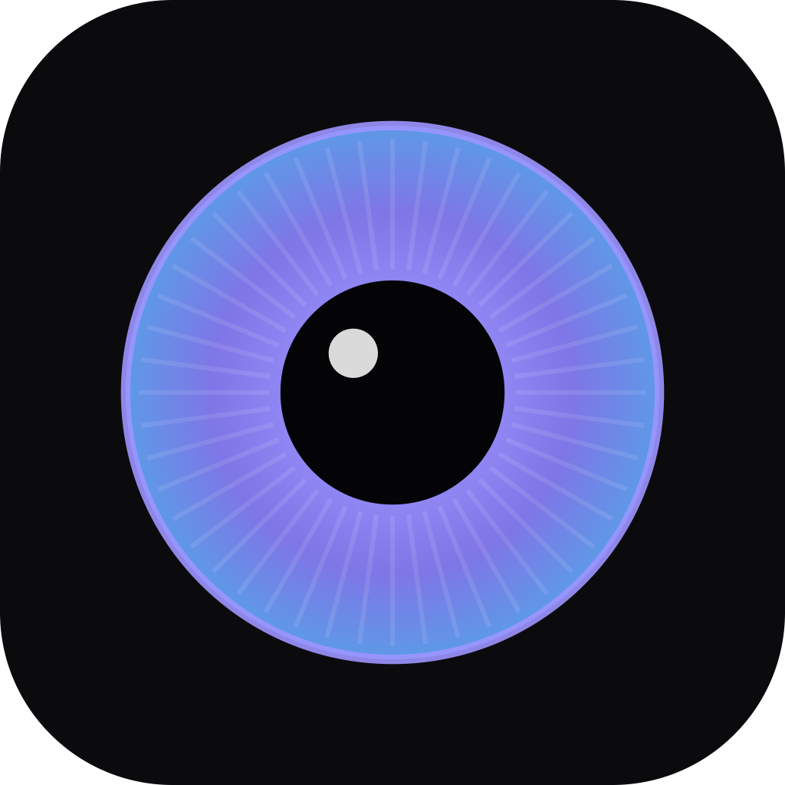

App nativo macOS de análise de imagem da íris para bem-estar e autoconhecimento. Captura pela câmera, segmenta a íris, extrai características e gera um laudo em PDF.
Refino sub-pixel das bordas da íris e pupila pelo operador integro-diferencial, sobre landmarks do Vision.framework.
Normalização rubber-sheet e extração de características de textura e nitidez com Accelerate.
Foco, oclusão, reflexo especular, ângulo, dilatação e tamanho — baseado na literatura de reconhecimento de íris.
Diâmetro de íris/pupila em mm, razão pupilar e classificação (miose / normal / midríase).
Relatório com imagens, métricas e comparação entre olhos, gerado com Core Graphics / PDFKit.
Captura e análise rodam na própria máquina. Nenhuma imagem é enviada a servidores de terceiros.
| Interface | SwiftUI (tema escuro, acento índigo/ciano) |
| Câmera | AVFoundation |
| Landmarks faciais | Vision.framework (VNDetectFaceLandmarksRequest) |
| Visão computacional | Swift + Accelerate / Core Graphics |
| Laudo | Core Graphics / AppKit PDF |
| Sem dependências externas | sem Python, sem Qt, sem MediaPipe |
Requer apenas Command Line Tools (não precisa Xcode completo):
git clone https://github.com/dheiver2/iris-analyzer.git
cd iris-analyzer
swift build -c release
bash build_app.sh # gera "Iris Analyzer.app" na Área de Trabalho